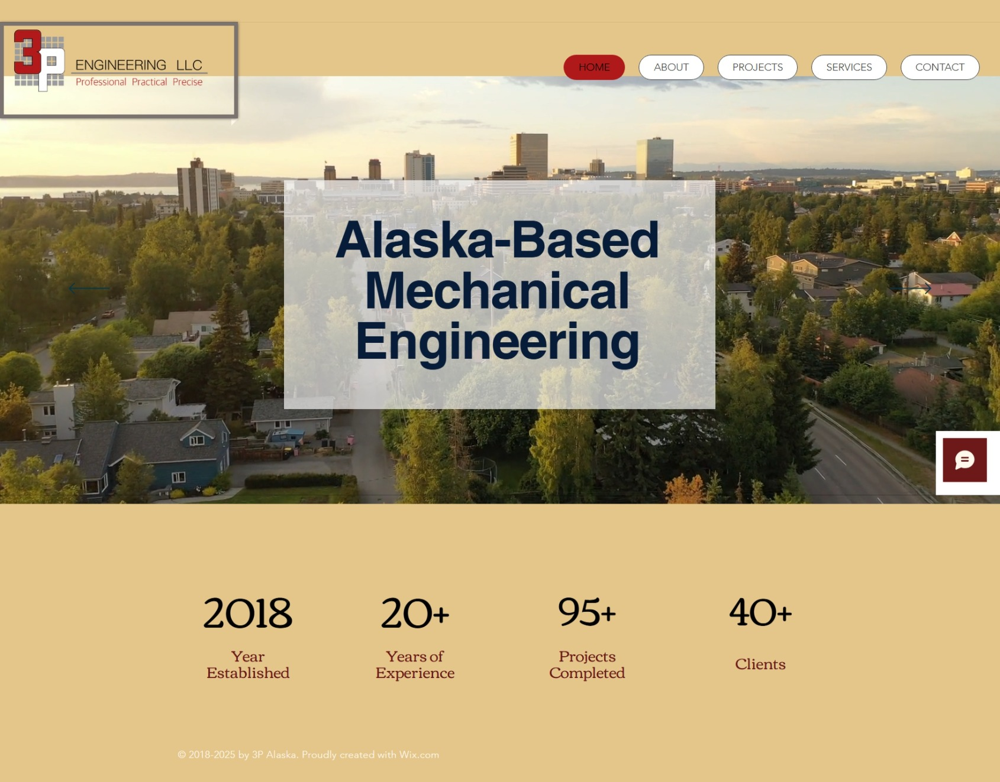
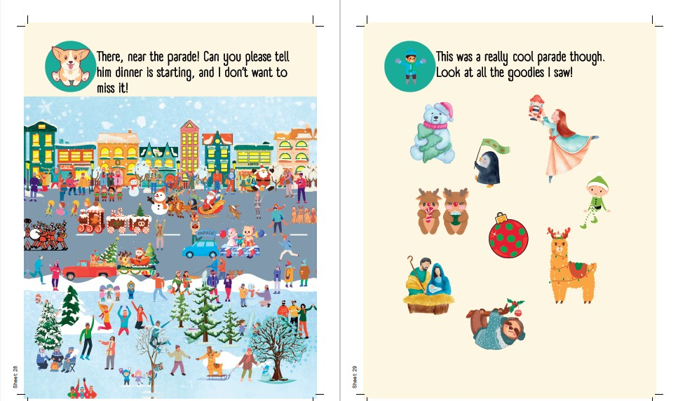
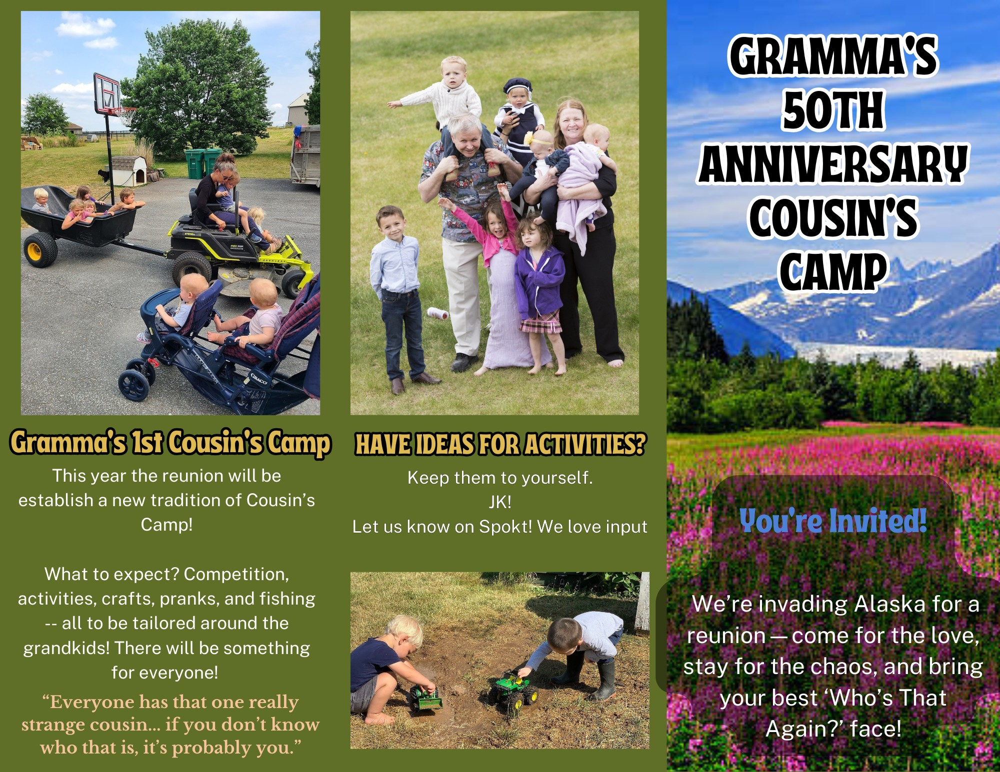

UX / UI Design Student • ASU GIT-UX
I design visual and digital experiences that make information engaging, clear, and meaningful.
I'm Andrea Marchant, a Graphic Information Technology student with an emphasis in User Experience at Arizona State University with a background in web design, print design, interactive storytelling, and information-rich visual projects.
Selected Work
Projects
A mix of web, editorial, interactive, and information design work that shows how I approach real audiences, content structure, and visual communication.

Web Design / UX
Engineering Company Website
Designed a website for an engineering company to organize technical services clearly and professionally for potential clients.

Interactive Storytelling
Children's Seek & Find Book
Created illustrated storybook experiences with narrative, characters, and visual search interaction for children.

Editorial / Information Design
Community Cookbook
Organized recipes, photos, and contributor content into a structured and readable print experience.

Information Design
Family Calendar
Built a repeatable multi-page layout system for events, birthdays, photos, and family contact information.

Event Website
Family Reunion Website
Organized event details, schedules, and updates into a clear and engaging website for a multi-user audience.

Print / Visual Communication
Reunion Brochure Design
Designed printed materials that balanced storytelling, event information, and visual hierarchy.
About
A visual designer growing into UX.
I’m currently studying Graphic Information Technology with a UX focus at Arizona State University. My work often blends visual storytelling, layout systems, information organization, and audience-centered communication.
I’m especially interested in designing experiences related to learning, children, creativity, and future AI-supported educational tools.
Skills
Design strengths and tools
Design
- Visual hierarchy
- Information architecture
- Editorial layout
- Typography
- Illustration
- Interactive storytelling
Tools
- Adobe Illustrator
- Canva
- HTML / CSS
- GitHub
- Visual Studio Code
- Microsoft Office / Google Workspace
What I bring
- Strong visual creativity
- Attention to detail
- Fast learning
- Communication and organization
- Real-world project experience
- Design across print and digital
Contact
Let’s connect.
I’m currently looking for internship and entry-level opportunities where I can grow in UX, UI, and digital product design.